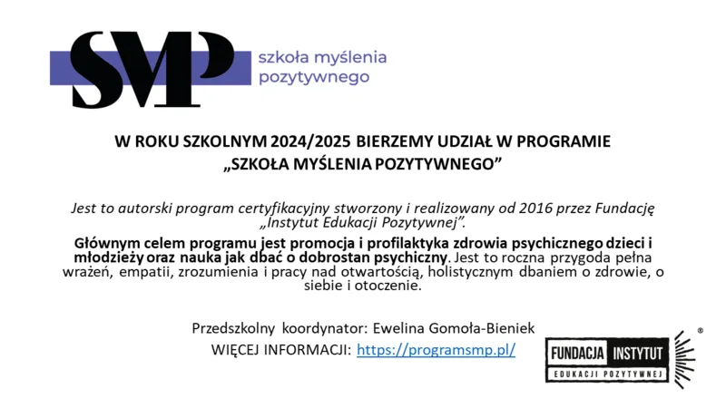

„Szkoła Myślenia Pozytywnego to roczna przygoda pełna wrażeń, empatii, zrozumienia i pracy nad otwartością, holistycznym dbaniem o zdrowie, o siebie i otoczenie."
W trakcie realizacji programu wspólnie eksplorujemy różnorodne zagadnienia związane ze zdrowiem psychicznym — dzieci, młodzieży, a także dorosłych z ich otoczenia. Głównym celem jest nauka wzajemnego wsparcia oraz dbałości o samopoczucie własne i innych.
Uczymy się, jak modyfikować swoją rzeczywistość tak, aby wspierała psychiczny dobrostan, motywowała do nauki, promowała pozytywną komunikację i pomagała skutecznie radzić sobie ze stresem oraz lękami.
To autorski program certyfikacyjny, realizowany od 2016 roku przez Fundację „Instytut Edukacji Pozytywnej". Przedszkolny koordynator: Ewelina Gomoła‑Bieniek.
Więcej o programie przeczytasz na stronie programsmp.pl.